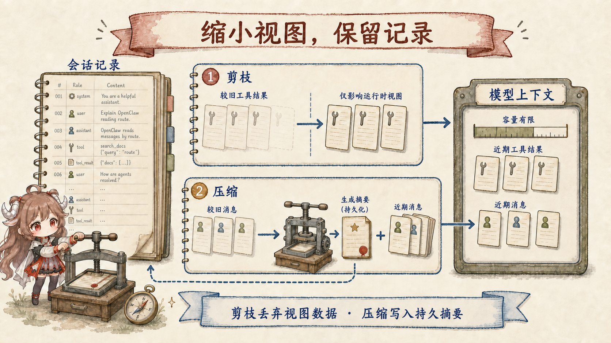

沿用上一篇的 Alice。她和 Agent 已经聊了两周，transcript 也一直存在。今天她问“照上周的决定继续”，Agent 却回答得像第一次听说。最直觉的判断是“历史丢了”，但也可能是历史还在、只是没有进入当前模型窗口；还可能是关键决定只留在长 transcript 里，没有写入长期 memory；或者 compaction 已经把旧对话概括成一份没有保留该细节的摘要。
这些故障看起来都叫“忘记”，修法却完全不同。扩大窗口不能修复错误的 session route，给 prompt 加一句“请记住”也不能把数据变成持久状态，把全部 transcript 每轮塞进模型更会很快撞上成本和上限。要准确排查，必须先把 record、memory 和 runtime view 拆成三个不同的 owner。
阅读契约。读完后你应该能回答：哪些 workspace 文件默认进入 Project Context；system prompt 为什么每次运行重建；工具为什么有两份 token 成本；ContextEngine 的 ingest、assemble、compact、afterTurn 分别掌管什么；pruning 与 compaction 哪个改 transcript；以及 MEMORY.md 为什么不能与 context window 画等号。
证据边界。本文固定在提交 e6b4264，以该快照中的 workspace/bootstrap、ContextEngine、内建运行时与 SQLite 会话实现为准。默认客户端摘要、provider checkpoint 与自定义 engine 分别有自己的行为；下面明确区分，不把一种压缩路径当作所有运行时的合同。
一、一次模型请求由哪些材料组成
1.1 “上下文”包含本次请求的全部输入
在 OpenClaw 的语义里，context 不是“最近几条聊天”，而是这一次请求真正交给模型的全部输入：system prompt、conversation messages、tool calls/results、附件和工具定义。模型的 context window 是它们共同争用的容量，不存在一块只给聊天历史保留、永远不受工具 schema 影响的独立空间。
这条定义解释了一个常见现象：你没有多聊几轮，只装了几个描述很长的工具，剩给历史的预算就变少了。界面看到的消息长度也不是唯一指标；图片、结构化 tool result、JSON schema 和动态注入都可能占用窗口。
model context = system prompt
+ assembled conversation history
+ tool schemas
+ tool results and attachments
memory != model context
transcript != model context这里两个“不等于”比公式本身更重要。transcript 是可持久化的会话记录；memory 是跨轮次甚至跨会话保留的精选事实；model context 是一次运行临时形成的视野。前两者可以成为第三者的来源，但都不会自动、完整地等于第三者。
1.2 workspace 提供工作目录，sandbox 负责隔离
每个 Agent 有一个 workspace，默认是工具相对路径和 bootstrap 文件的根目录。workspace.ts 负责建立目录和初始文件；运行时再读取这些文件，作为 Project Context 注入 system prompt。
“工作目录”不能被误读成“文件系统边界”。如果工具没有 sandbox 约束，绝对路径仍可能访问 workspace 外部；真正的文件、网络和进程隔离属于第六篇的 sandbox/tool policy。workspace 解决的是默认归属与协作材料，不独自承担安全性。
还要把 workspace 与 OpenClaw 自己的状态目录分开。前者保存 Agent 可编辑的说明、技能和记忆文件，后者保存配置、凭据、session store 等 runtime 状态。把 session 数据库放进 workspace，或把用户项目塞进 runtime state 目录，都会让备份、权限和迁移边界混乱。
1.3 Project Context 只加载约定的 bootstrap 文件
canonical bootstrap 集合有明确名字：AGENTS.md 约定工作方式，SOUL.md 描述人格与原则，IDENTITY.md 描述身份，USER.md 保存用户画像，首次初始化时还会加入 BOOTSTRAP.md；根 MEMORY.md 只有在已经存在且当前不是 shared group/channel 等受限会话时才进入 Project Context。runtime 不会递归读取 workspace，也不会因为文件“看起来重要”就自动注入。
| 文件 | 默认角色 | 容易混淆之处 |
|---|---|---|
AGENTS.md | 仓库/工作流约定与行为边界。 | 不是任意命令执行器，仍受上层 policy 约束。 |
SOUL.md | 角色、语气、原则。 | 人格文字不能代替访问控制。 |
IDENTITY.md | Agent 自我描述。 | 与 provider/model 身份是不同层。 |
USER.md | 稳定的用户偏好与背景。 | 有独立长度上限，避免画像吞掉窗口。 |
BOOTSTRAP.md | 首次启动引导。 | 初始化完成后不应继续当永久上下文膨胀源。 |
MEMORY.md | 已存在时提供长期事实与决定。 | shared session 会移除根 memory；它不是无条件公开的全局 prompt。 |
每个文件和总 bootstrap 都有容量上限；太长时会截断，并在注入内容里留下 truncation marker。缺失的常规文件会留下可观察标记，但未创建的 USER.md、MEMORY.md 会直接跳过。会话过滤还会让 subagent 只保留 AGENTS.md，cron 只保留 AGENTS.md、SOUL.md、IDENTITY.md、USER.md；两者都不加载根 memory。这些差异不能简单归因于截断。
TOOLS.md、BOOT.md、HEARTBEAT.md 各自有用途，但不能因此推断它们总在默认 Project Context 列表里。源码阅读时应追真实 bootstrap resolver，而不是只按文件名猜注入语义。
1.4 system prompt 每轮组合稳定规则与动态现场
buildAgentSystemPrompt 不是安装时生成的一张静态模板。每轮运行都会根据当前工具、技能 metadata、workspace、runtime、时间、channel capability、sandbox 状态和 bootstrap 内容组合 system prompt。bootstrap snapshot 每轮重新读取文件，内容相同才复用旧数组；因此通过会话过滤和长度限制的文件修改会在下一轮构建中生效，不需要回写旧 transcript。
这也意味着 prompt 必须分清稳定与动态。角色原则适合放 workspace 文件，当前时间、可用工具和沙箱状态应运行时生成；把所有动态信息持久化进 transcript 会制造过期事实，把所有稳定规则由 channel 每次拼接又会造成入口不一致。
斜杠 directive 也属于前处理。/think、/model、/queue 等控制信息先更新 runtime/session 设置，再从送给模型的用户正文中剥离。模型看到的是处理后的请求，而不是 Gateway 用来控制本轮的全部协议文本。
1.5 Skills 按需展开，工具 schema 随请求发送
为了控制成本，system prompt 默认只列出可用 skill 的名字、摘要和位置。模型判断需要某项能力时，才通过读取 SKILL.md 加载完整指令。若把每个 skill 的全文永久注入，安装得越多，模型真正留给任务和历史的空间反而越少。
工具的成本更隐蔽。system prompt 里有一份面向模型阅读的工具名称/简述；provider 请求里还有决定可调用参数的 JSON schema。后者不一定以普通聊天文字显示，却同样计入 context。工具描述精炼、schema 去掉无效嵌套，常常比删几句用户历史更有效。
一个实用判断：skill 是“什么时候需要去读哪份操作手册”，tool schema 是“本轮模型现在能够发出什么结构化调用”。前者适合按需展开，后者要在可调用时完整可见。不要为了省 token 把工具参数合同藏起来，也不要把所有操作手册提前塞满窗口。
二、ContextEngine 怎样选择本轮消息并维护历史
2.1 ContextEngine 组装模型输入，不自动替代 session store
默认的 legacy context engine 保留原有行为：ingest 和 afterTurn 基本不做额外工作，assemble 让现有 sanitize/validate/limit pipeline 处理消息，compact 委托内建总结。插件可以占用唯一的 plugins.slots.contextEngine，但它接管的是上下文生命周期，不自动成为 transcript 的唯一数据库。
ContextEngine 的核心生命周期可按时间读：
- ingest：消息进入 session 时，让 engine 保存、索引或观察它。
- assemble：每次模型请求前，根据 token budget 返回有序 messages，并可附加
systemPromptAddition。 - compact：窗口接近上限或用户执行
/compact时，缩减旧历史。 - afterTurn：成功运行结束后更新索引、持久状态或安排后台维护。
- maintain（可选）：通过受控 rewrite API 做 transcript 维护，可配置后台执行。
assemble 返回的是本轮消息序列，并可增加 system prompt 片段；实际调用给它 messages、预算、当前用户 prompt 与可用工具名集合，并不把完整 system prompt 和工具 JSON schema 都交给它重建。运行时另外组装这些材料，最终送给 provider。选择消息也不授权插件任意删改持久记录：重写 transcript 仍须走 runtime context 的安全接口。
2.2 turn fence 防止重试重复写入当前消息
一个 custom engine 可能把 transcript 同步进向量库，再按相关性组装上下文。真正危险的地方在 retry：同一个用户 turn 若第一次 provider 请求失败并重试，engine 不能把它提交两次，也不能在组装时一会儿看见当前消息、一会儿看不见。
因此持久接管 admitted turn 时，engine 要声明 current-turn fence 与 atomic-idempotent advancement，并用 advancementKey 实现原子 commitTurn。相同 key 的重试必须返回 duplicate，而不是追加第二份记录。没有完整声明时，host 会保守地让该逻辑 turn 回到 legacy 路径，避免插件创造双写历史。
这条合同值得迁移到所有“外部记忆 + Agent”系统：检索相关性只是读路径；幂等提交、可重复组装和当前 turn 的可见边界才决定状态能不能相信。
2.3 Transcript、Memory 与本轮模型输入分别保存不同内容
Transcript 按顺序记录某个 sessionId 里真实发生的消息、tool call 与 result。Memory 保存经过筛选、希望长期复用的事实与决定。本轮模型输入则是 assemble 临时选出的消息序列；请求结束后，这份临时序列不需要再次写成历史。
MEMORY.md 用于 curated long-term memory，memory/YYYY-MM-DD.md 用于每日记录。main private session 可以把长期 memory 作为受信上下文或检索来源；群组与其他 session 不应无条件拿到同一份私人画像。memory retrieval 是一次有权限边界的选择性桥接，不是“把所有记忆文件 concat 进 prompt”。
上一章提到的跨会话 recall 也遵循同样边界：它可以从其他获准 transcript 中检索片段，但不会合并 session key，不会改变原 transcript owner。否则“记得相关事实”就会意外变成“继承另一个会话的全部权限”。
三、历史变长后怎样缩减模型输入
3.1 Pruning 只缩本轮输入，Compaction 写入持久摘要

两者都让模型输入变小，但持久语义完全不同。Pruning 在组装时丢弃旧 tool result 的大块内容，只影响 in-memory prompt；磁盘 transcript 仍保留完整结果，之后可以审计或在不同策略下重新组装。它适合处理可复现、已失去即时价值的工具输出。
默认客户端 compaction 把旧 conversation 总结成摘要，并追加 compaction 记录，其中 firstKeptEntryId 标出保留消息的起点。下次重建上下文时，运行时用最新摘要加保留的近期消息继续推理。原始历史仍然保存在磁盘；有损的是摘要代表的模型视图，而不是压缩把旧记录直接抹掉。摘要与切分点持久化，因此其影响会延续到后续请求。
| 机制 | 本轮 context | 持久 transcript | 适合解决 |
|---|---|---|---|
| Pruning | 移除较旧 tool results。 | 不改写。 | 工具输出占用过大，但仍需保留审计记录。 |
| Compaction | summary + recent messages。 | 追加 summary 与保留起点，原始历史仍在。 | 对话本身长期增长，必须越过窗口边界。 |
所以“context 里没看到”不能直接推出“数据被删除”：assembly 可能没有选中，pruning 可能只裁掉本轮结果，compaction 则可能让摘要漏掉了细节。下面是简化的状态形状，省略记录 id、父节点和时间；关键是追加压缩记录，而不是覆盖 Alice 原来的决定。
持久历史：旧消息 … + 近期消息 …
追加记录：{ type: "compaction", summary: "已确定方案 …",
firstKeptEntryId: "recent-user-entry", tokensBefore: 42000 }
下轮输入：摘要 + 从 recent-user-entry 开始的保留消息
原始历史：仍可从会话存储读取3.2 Memory flush 与可选维护何时运行
Memory flush 是一次静默 housekeeping turn，提醒 Agent 把值得长期复用的事实追加到 memory 文件。摘要延续当前会话，memory 服务更长期的检索，两者不互相替代。但“压缩前先 flush”并不等于每次用户提问都必须同步等待一次记忆整理。
内建运行时把必要的推理前维护与可选的回复后维护分开。需要先缩减历史才能推理时，前台仍执行必要 compaction，并可在它前面尝试 flush。持续运行的 Gateway 则把额外 flush/compaction 放到回复投递已结束、前台写入者已退出之后，使用独立会话写入许可和本轮剩余时间；一次性 openclaw agent --local 不启动这种返回后的可选工作。
例如 Alice 收到回复后马上发来下一条消息，前台协调器会取消可抢占的维护，并等待它真正结束后才读取会话。取消信号不是“写入已经停止”的证明，也不会撤销已经提交的摘要。可选维护失败只记录故障，不能把已经完成的回复替换成失败。
| 时刻 | 谁执行 | 保证与限制 |
|---|---|---|
| 模型请求前，历史必须缩减 | 前台运行 | 必要 compaction 成功后再推理；失败保留会话并报告。 |
| 回复投递与前台写入结束后 | 独立维护运行 | 有条件地 flush、compact；可能没有工作或剩余时间。 |
| 下一条消息到达 | 前台协调器 | 取消并等待维护结束，避免两个写入者同时改变历史。 |
flush 的单独模型 override 是精确选择，不继承 session fallback chain。其工具只保留读和针对指定 memory 文件的 append-only 写入，之后仍须通过正常 tool policy；若写工具最终被移除，运行时会警告无法保存。最可靠的实践仍是及时记下决定，而不是依赖窗口将满时的一次抢救。
3.3 窗口溢出时仍要保留消息与工具结果的配对
运行前会估算 prompt 是否接近 provider context window；运行中也可能从 provider 收到 overflow。legacy engine 可触发 compaction 并重试，拥有 compaction 的 custom engine 则负责自己的 compact 合同。无论哪条路径，都要保住 tool call/result 配对、当前用户 turn 和可继续的 recent history。
compaction 受有限安全超时保护；取消整个运行后，运行时不能继续启动新的恢复工作，也不能把“停止等待”当作回滚已提交摘要。工具调用尤其需要保留配对：assistant tool call 与对应 result 不能裁成孤儿。当前内建运行时还能在工具结果已经落定后遇到 provider overflow 时，基于已记录结果压缩并继续，保留当前模型、账户和原请求，避免重新执行已经完成的外部动作；待执行工具、审批等待与取消不能借此路径继续。
因此缩减上下文不只是 token 算术。系统还要修复 transcript 结构、满足 provider 约束，并保证重试不会打乱已经发生的工具副作用。
四、怎样确认 Agent 为什么“忘记”
4.1 用报告检查实际请求，而不是猜聊天页
/context list 先看总贡献，/context detail 展开最大的 system prompt 与 tool schema，/context map 用更直观的分布观察预算。报告优先使用上一次 embedded run 真正捕获的 system prompt；没有 run report 时才现场估算。
排查顺序可以固定为：先确认 route/sessionId 是否正确，再确认 transcript 是否有原始事实，再看 Project Context 是否截断、memory 是否写入/检索，最后看 pruning/compaction 与工具 schema 占比。这样不会一见“忘记”就盲目扩大窗口。
/context list
/context detail
/context map
/compact Focus on decisions, constraints, and unfinished work/compact 的 focus 提示应描述希望摘要保留的结构，而不是让它编造新事实。压缩前后最好用可验证的任务状态、文件路径、决定与未完成项做检查点。
4.2 五种“忘记”对应五个检查位置
| 症状 | 可能 owner | 正确动作 |
|---|---|---|
| 同一聊天突然像新会话 | route / sessionId | 检查 reset、daily/idle rollover 和 key，而不是先改 memory。 |
| 规则文件后半段不生效 | Project Context | 检查 bootstrap cap、截断标记，拆短稳定规则。 |
| 工具输出仍在磁盘但模型看不到 | Runtime View | 检查 pruning 和当前 assembly；不要认定 transcript 丢失。 |
| 旧决定被摘要概括掉 | Compaction | 改进 focus/summary 质量，并把耐久决定提前写入 memory。 |
| 跨会话事实没有召回 | Memory/retrieval | 检查是否写入、索引、权限和检索命中；不要合并 transcripts。 |
4.3 七条可以迁移的上下文规则
- 持久记录与模型视野分开。保存成功不代表每轮都应完整注入。
- 每类信息都有明确保存位置。transcript、memory、workspace 与本轮模型输入不互相冒充。
- bootstrap 要显式且有界。递归吞目录既昂贵，也让注入来源无法审计。
- 能力有双重成本。skill 目录适合按需展开，tool schema 必须精确但应保持紧凑。
- assembly 与 rewrite 分权。选择本轮材料不等于获得任意改历史的权限。
- pruning 是视图优化，compaction 是持久迁移。两者的恢复和审计承诺不同。
- 有损压缩前先提炼长期事实。memory flush 是最后防线，不应是唯一写记忆时机。
下一篇不再问“模型看到了什么”，而是问“模型为什么能做这些事”。我们会把 tools、skills、plugins 与 hooks 拆成一条能力装配链，分清说明、发现、注册、策略过滤和执行分别发生在哪一层。
参考源码与文档
- session-maintenance/run.ts · coordinator.ts · agent-tools.ts：回复后维护、前台抢占与 memory-flush 工具限制。
- workspace.ts 与 bootstrap.ts：workspace 文件创建、加载、截断与 Project Context 注入。
- system-prompt.ts：工具、skills、runtime、workspace 与 bootstrap 的 system prompt 组装。
- context-engine/types.ts 与 registry.ts：生命周期合同、slot 与 engine 注册。
- compaction-safeguard.ts：压缩前的安全保护。
- Context、Context engine、Compaction、Memory：官方语义与配置。